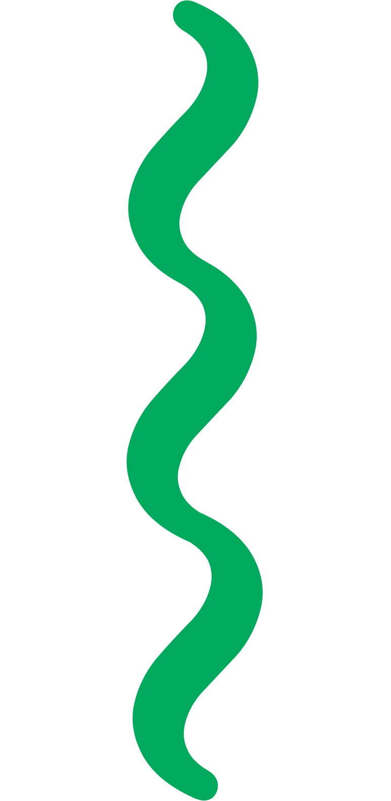

Like gardeners, we each cultivate our own territory. As we nurture our territory, we encounter various questions, from practical concerns—such as which designers and studios exist in the field we want to work in—to personal curiosities about what our peers are currently most interested in. It can be challenging for one person to find answers to all these questions alone. This zine encapsulates a collective guide, offering insights and connections to help us all grow and flourish in our creative journeys.
Book Designer: Julia Cheung
Binding: Julia Cheung
Editor: Bonnie Lin
Web Designer: Amina Hachimura
Typography: Instrument Serif
Designed by: Rodrigo Fuenzalida, Jordan Egstad
©2024 Senior Graphic Design Studio C1
All rights reserved. No part of this book may be reproduced without written permission from the author, except in the context of reviews.
Every reasonable attempt is made to identify owners of copyright. Errors or omissions will be corrected in sub-sequent editions.
Boston University
College of Fine Arts
School of Visual Arts
December 2024
Sorry, your screen is too small for this...
This page works best on a tablet or computer!
If your device is big enough, make sure it is in landscape mode!